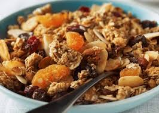

Misture e leve ao forno até dourar, mexendo às vezes. Guarde em pote fechado.
Para 20g tem 64,5 calorias, 12,5g de carboidratos, 2,2g de fibras, 2,4g de proteína e 2,5g de gordura.
A receita toda tem 815 calorias, 158g de carboidratos, 29g de fibras, 30g de proteína e 35g de gordura.
← Voltar